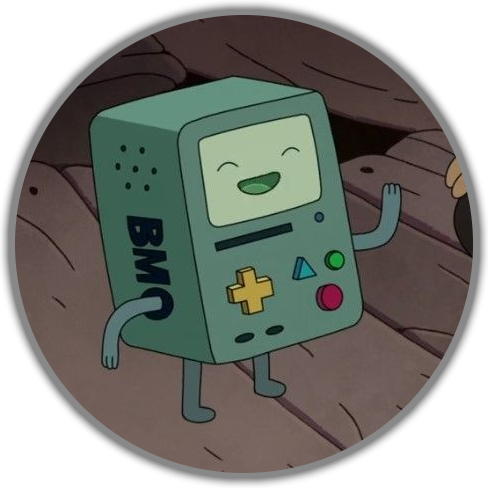

<!DOCTYPE html>
<html lang="en"></html>
  <head>
    <meta charset="UTF-8" />
    <meta name="viewport" content="width=device-width, initial-scale=1.0" />
    <title>@Jesgran</title>

    <link rel="stylesheet" href="style.css" />

    <link rel="preconnect" href="https://fonts.googleapis.com" />
    <link rel="preconnect" href="https://fonts.gstatic.com" crossorigin />
    <link
      href="https://fonts.googleapis.com/css2?family=Inter:wght@400;500&display=swap"
      rel="stylesheet"
    />

    <meta property="og:title" content="Jesgran LinkTree" />
    <meta property="og:type" content="website" />
    <meta property="og:url" content="https://jes.is-a.dev/" />
    <meta property="og:image" content="https://jes.is-a.dev/assets/disc.jpg" />
    <meta property="og:description" content="I build sites, discord bots and useless things just to see if i can do it." />
    <meta name="theme-color" content="#407c84" />

  </head>
  <body>
    <div id="container">
      <div id="user">
        
        <p>@jesgran.js</p>
      </div>

      <div id="social-links">
        <a
          href="https://github.com/jesgran"
          target="_blank"
          rel="noopener noreferrer"
        >
          <ion-icon name="logo-github"></ion-icon>
        </a>
        <a
          href="https://discord.com/users/436963335414480897"
          target="_blank"
          rel="noopener noreferrer"
        >
          <ion-icon name="logo-discord"></ion-icon>
        </a>

        <a
          href="https://t.me/jesgran"
          target="_blank"
          rel="noopener noreferrer"
        >
          <ion-icon name="paper-plane"></ion-icon>
        </a>
      </div>

      <ul>
        <li>
          <a
            href="https://jesgran.is-a.dev/"
            target="_blank"
            rel="noopener noreferrer"
            >Portofolio</a
          >
        </li>

        <li>
          <a
            href="https://github.com/BMO-Bots"
            target="_blank"
            rel="noopener noreferrer"
            >Bots Sources</a
          >
        </li>

        <li>
          <a
            href="https://jes-1.gitbook.io/docs/webcraft"
            target="_blank"
            rel="noopener noreferrer"
            >WebCraft</a
          >
        </li>

        <li>
          <a
            href="https://github.com/Jesgran/edotalks"
            target="_blank"
            rel="noopener noreferrer"
            >EdoTalks</a
          >
        </li>
      </ul>
    </div>

    <script
      type="module"
      src="https://unpkg.com/ionicons@7.1.0/dist/ionicons/ionicons.esm.js"
      nomodule
      src="https://unpkg.com/ionicons@7.1.0/dist/ionicons/ionicons.js"
    ></script>

  </body>
</html>
